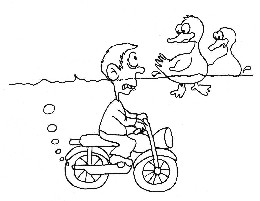

| Maître raconte des histoires drôles |
Le 2 octobre 1999 (initialement en chinois) |
 Un jour, un motocycliste voulut traverser une rivière, mais trouva le pont détruit. Il demanda à un garçon près de là, " La rivière est-elle profonde ? " L'enfant répondit " Non, elle n'est pas profonde. Vous pouvez la traverser sur votre motocyclette sans aucun problème. " L'homme pénétra dans la rivière. Mais en milieu de chemin, il se rendit compte qu'il avait de l'eau jusqu'à sa gorge ? Il était presque noyé. Il hurla au garçon " C'est une blague ? Tu es en train de me tuer. Pourquoi as-tu dis que ce n'était pas profond ? Il y a au moins cent mètre de profondeur. Si je vais plus loin je me noierai sans aucun doute ! Le petit garçon se gratta la tête et dit innocemment " Étrange ! Hier, j'ai vu des canards nageant dans la rivière, et l'eau leur arrivait seulement aux épaules ! "